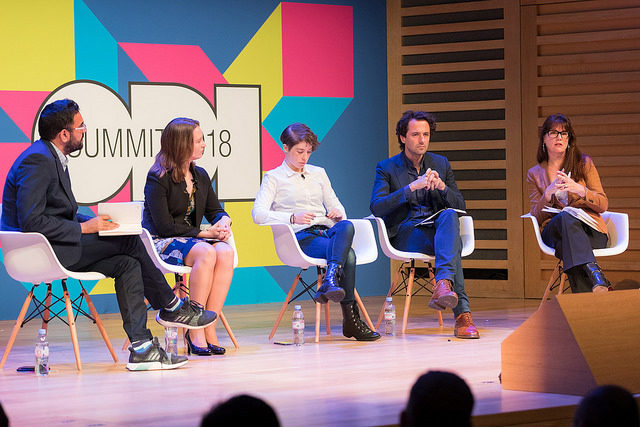

Anna Scott
Creative producer, journalist, musician and advocate.
I’m interested in bringing more attention and debate around data, human rights and changing society norms.
Currently I'm Head of Content at Open Data Institute where I lead a team of designers, writers and other content makers. Previously I worked at the Guardian, The Mirror and Center for Global Development.
I make music and am producing the first series of a podcast called 30Talk. Cilla is my spirit.
Selected work

Data trusts
Open Data Institute

Data Ethics Canvas
Open Data Institute

ODI Summit 2018
Open Data Institute

Strategy 2018-2022
Open Data Institute